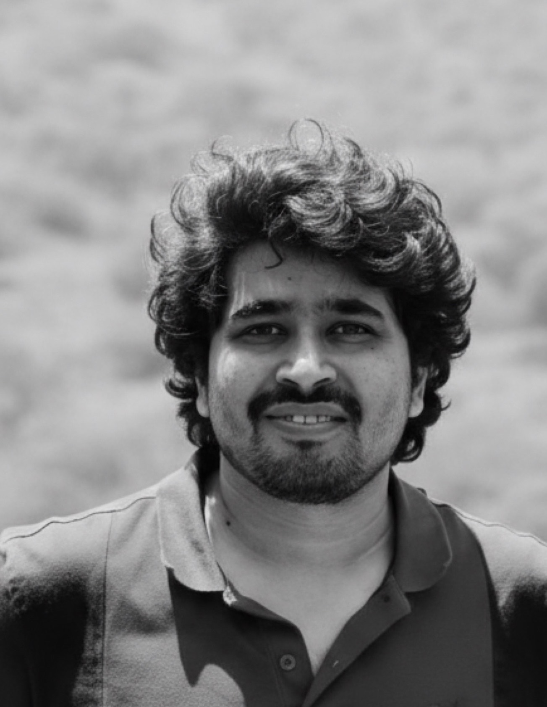

I design systems that don't break
when everything else does.
Cloud platforms. Distributed systems. Microservices. Data pipelines — built to handle real scale, real users, real pressure.

I don't just write software. I design how systems behave when they grow, fail, recover, and scale.
Over 10+ years, I moved from writing code to designing architecture for large-scale platforms. Not theory. Production systems. Real constraints. Real users.
Most problems I solve start with the questions nobody asks until it's too late.
📚 Learning how large systems evolve · 🧠 Studying distributed systems patterns · ☕ Mentoring engineers · 🌱 Exploring tech × business intersections
Not tutorials. Real lessons.
If you're modernizing a platform, designing for scale, or solving distributed systems problems — let's talk. I focus on one thing: building systems that last.